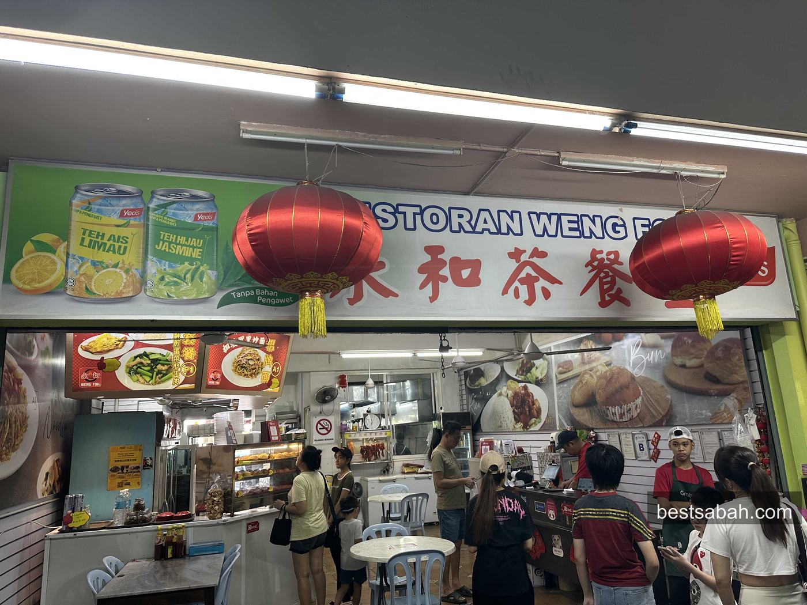
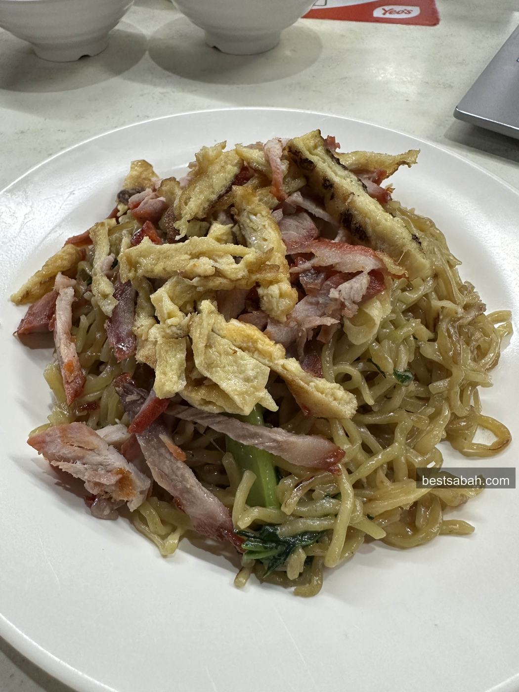
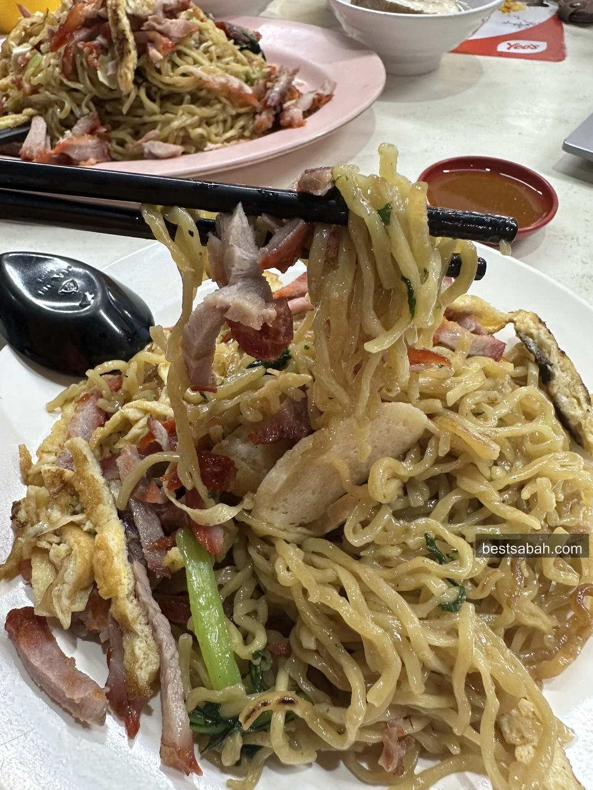

June 2026
Best Tamparuli Mee in Kota Kinabalu: Weng Foh
Tamparuli mee, fried with egg, char siew and egg rolls! I have tried so many versions of it over the years, and this is the one that stuck. Weng Foh in Damai does it best, and honestly it even beats the original back in Tamparuli town!

Restoran Weng Foh, tucked in the Damai shoplots
So what is tamparuli mee? It is a noodle dish that started from Tamparuli, a district in Sabah. That is how it got the name!
We have a lot of different noodle dishes in Sabah. Some of the most famous ones are tuaran mee, tenom mee, beaufort mee, and this one, the tamparuli mee. Each town has its own style.
The Tamparuli Mee

Fried noodles with egg, char siew and egg rolls
It is fried noodles done with egg, char siew and egg rolls all mixed through. The noodles come out springy and full of wok flavour, every single strand coated. Simple dish, but when it is done right like this, man it really hits!
Better Than the Original

Springy noodles, plenty of char siew
I will say it straight. This beats the original tamparuli mee back in Tamparuli! So save yourself the long drive and just come here instead. Same great noodles, right in the city!
Highly recommended! If you want proper Sabah noodles without leaving KK, this is the one to beat.
Getting There
Weng Foh is tucked away in the Damai shoplots. Always buzzing with the lunch crowd, so it is not hard to spot once you are in the area. That should tell you something already.
Address: Block E, Jalan Damai, 88300 Kota Kinabalu, Sabah.
Hours: Come for breakfast or lunch. They are not open at night, so go in the morning or around lunchtime.
Coming by Grab? Search "Restoran Weng Foh" and it comes up.
The best tamparuli mee I have had, and you do not even need to drive out to Tamparuli for it! Cheap, tasty, and right here in Damai. Trust me on this one, give it a try!
On a Sabah noodle run? Pair this with Towering Tenom Mee on the other side of town. Two different towns, two different styles, both worth your time.